Construction on Como Cathedral began in 1396, 10 years after the foundation of Milan Cathedral. The works, started under the supervision of Lorenzo degli Spazzi di Laino, did not finish until 1770 (presumably because the workers had been on an unreasonably extended siesta) with the completion of the Rococo cupola. The imposing west front was built between 1457 and 1498 and features a rose window and a portal between two statues of Pliny the Elder and Pliny the Younger, both natives of Como. Pliny the Younger recorded the explosion of Mt. Vesuvius when it buried Pompeii.
There is also a recess featuring Saint Yoda (picture 4) which inspired George Lucas to use him in the 'Star Wars' films.
Asparagus risotto!
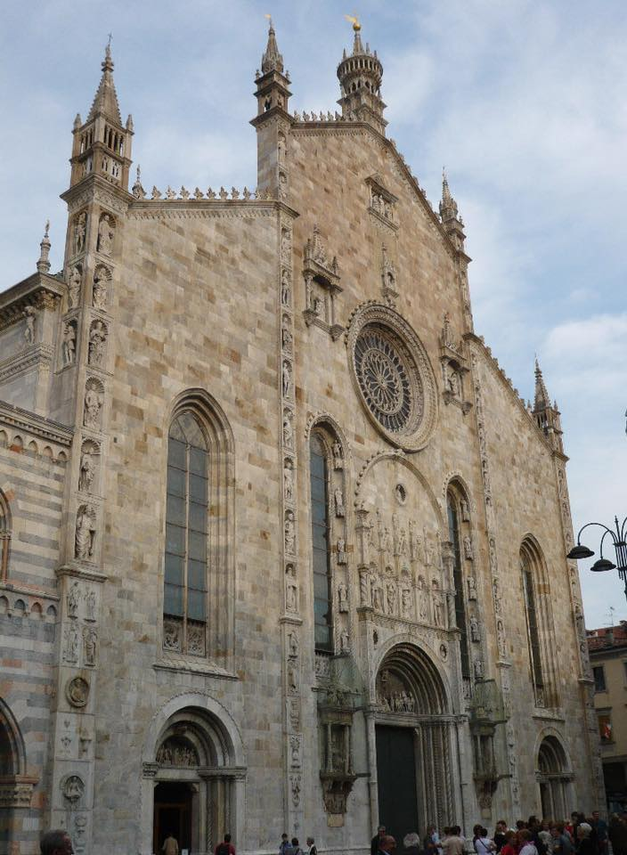
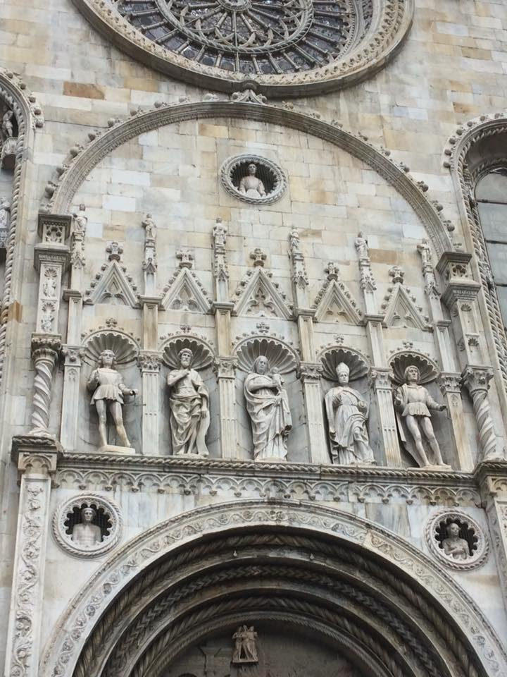
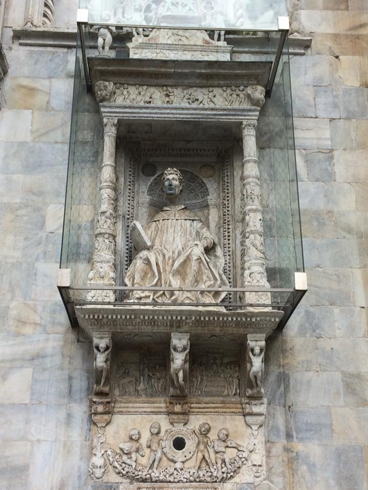
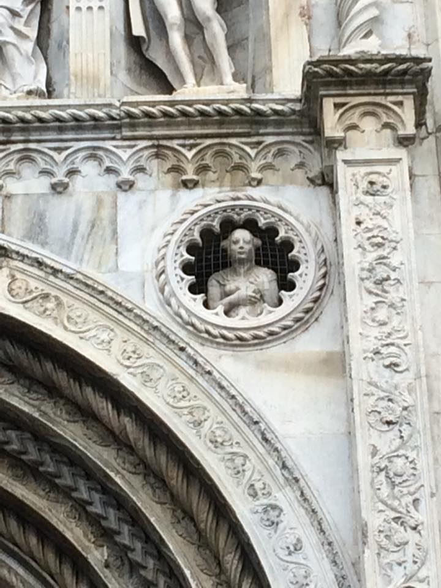
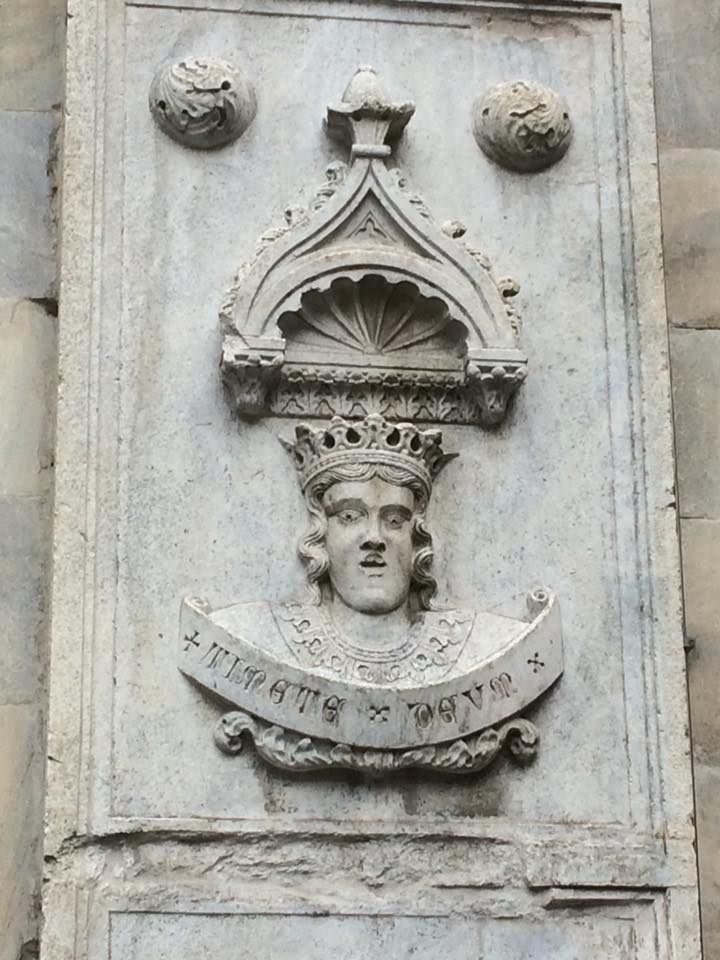
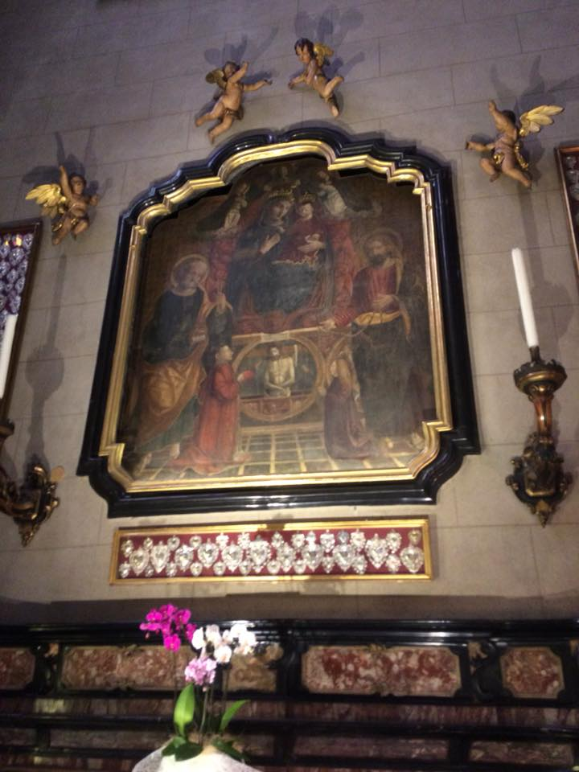
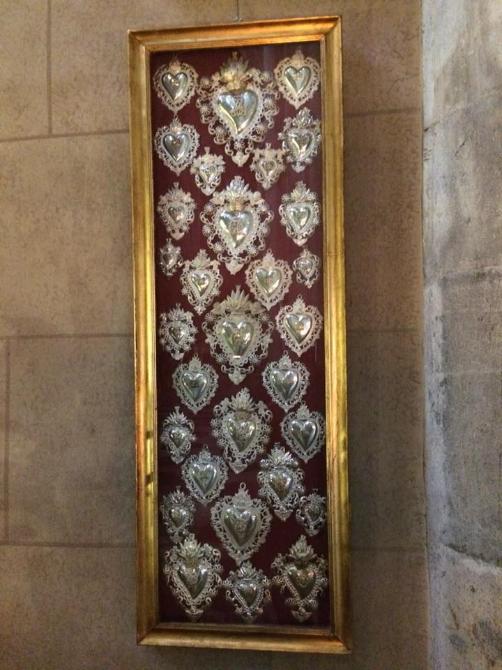
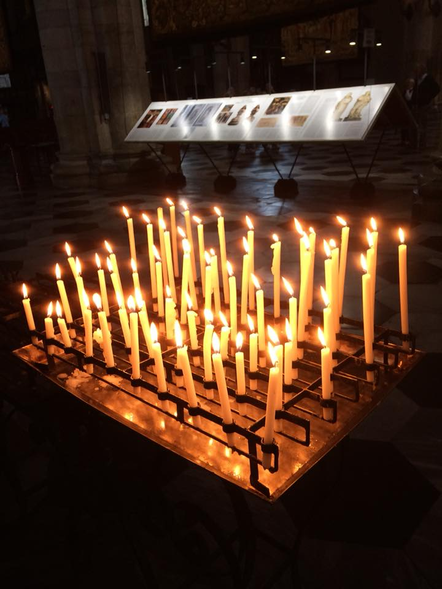
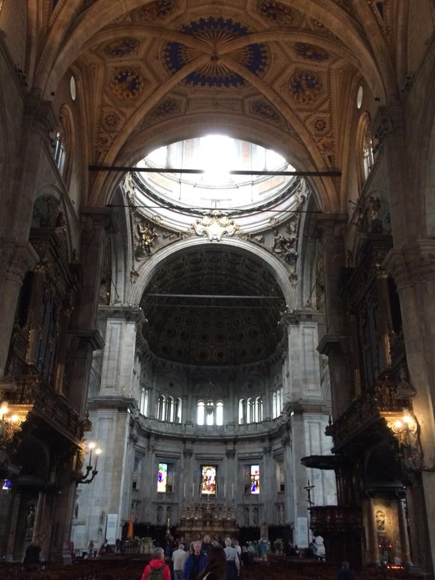
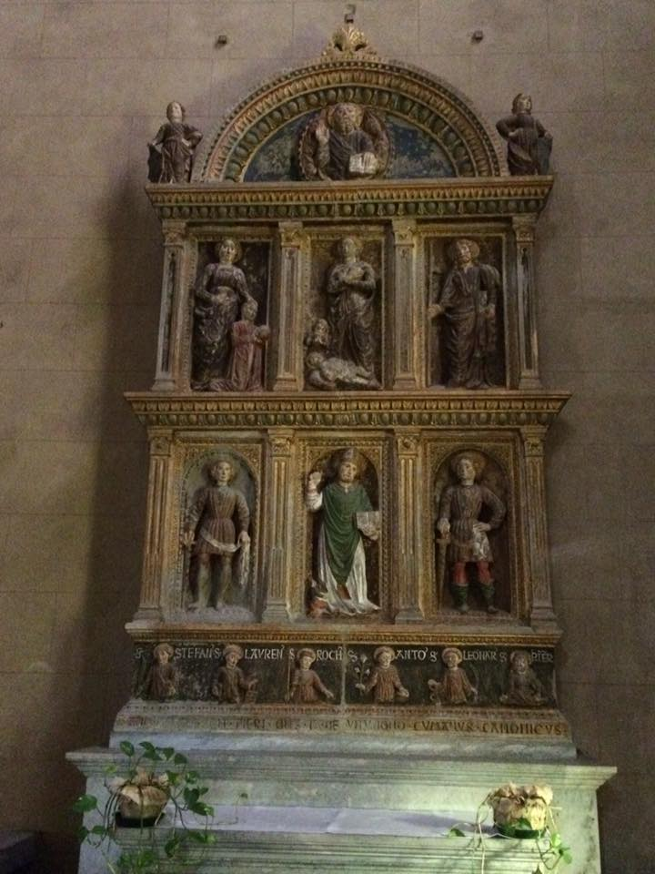
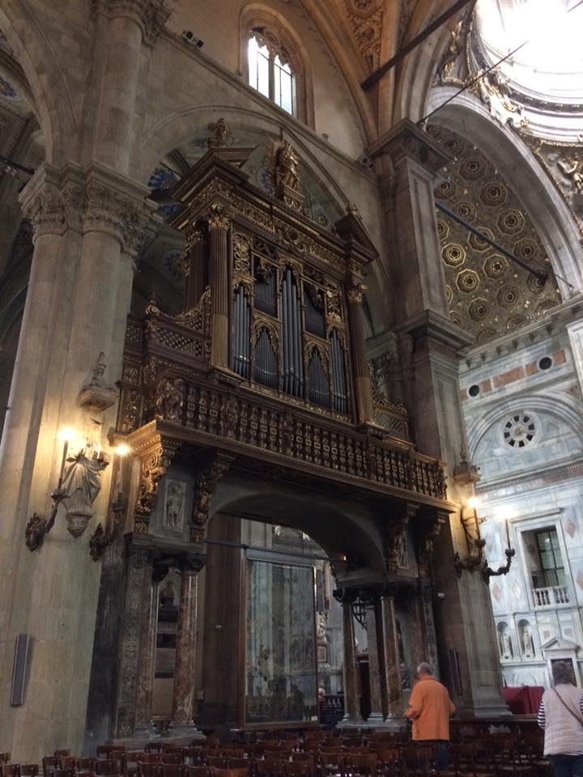
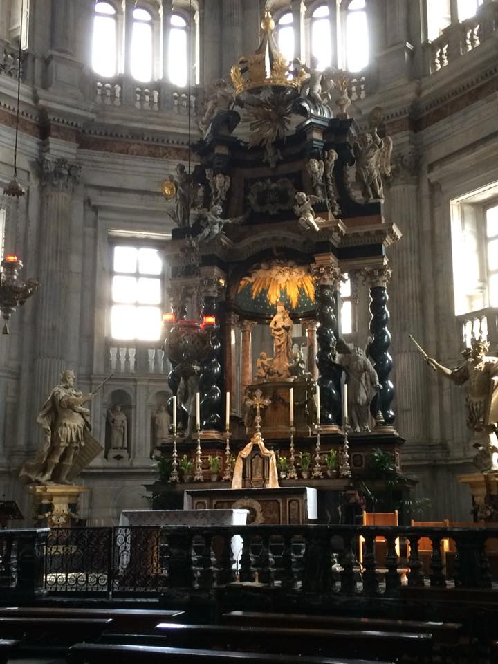
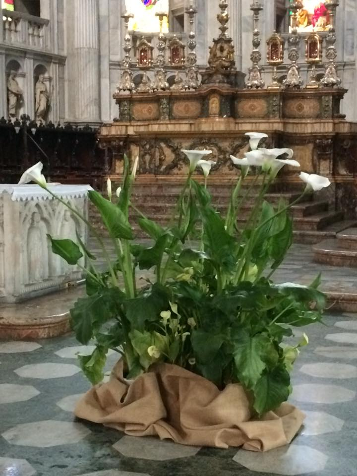
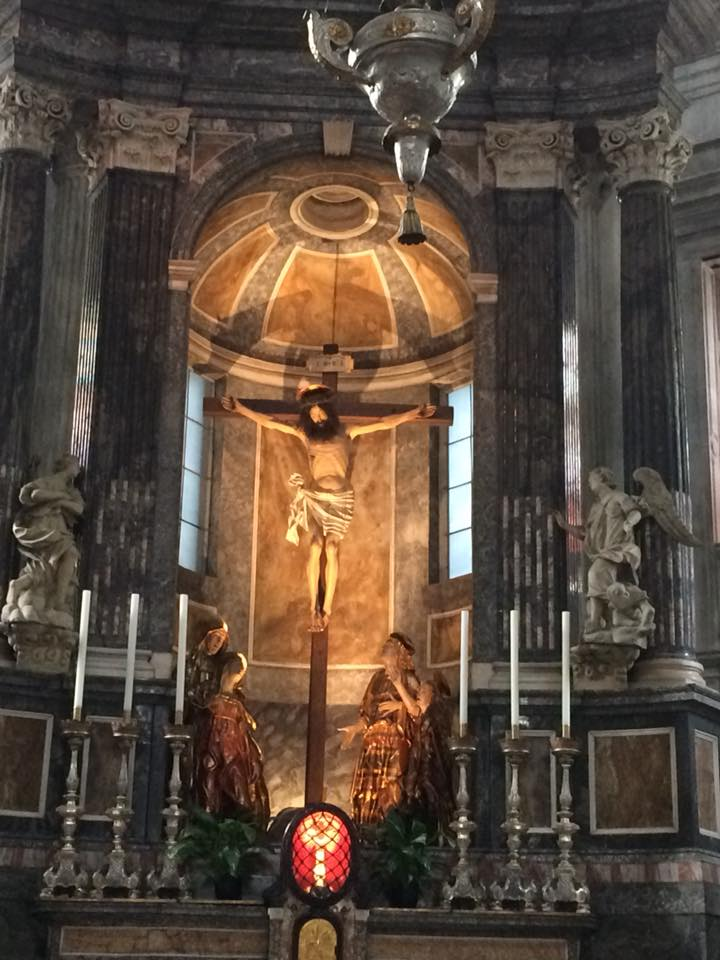
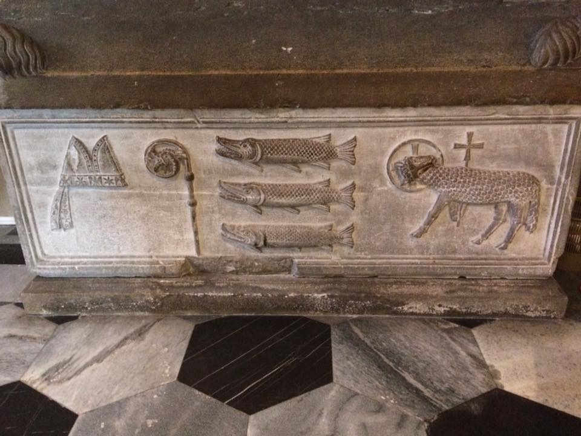